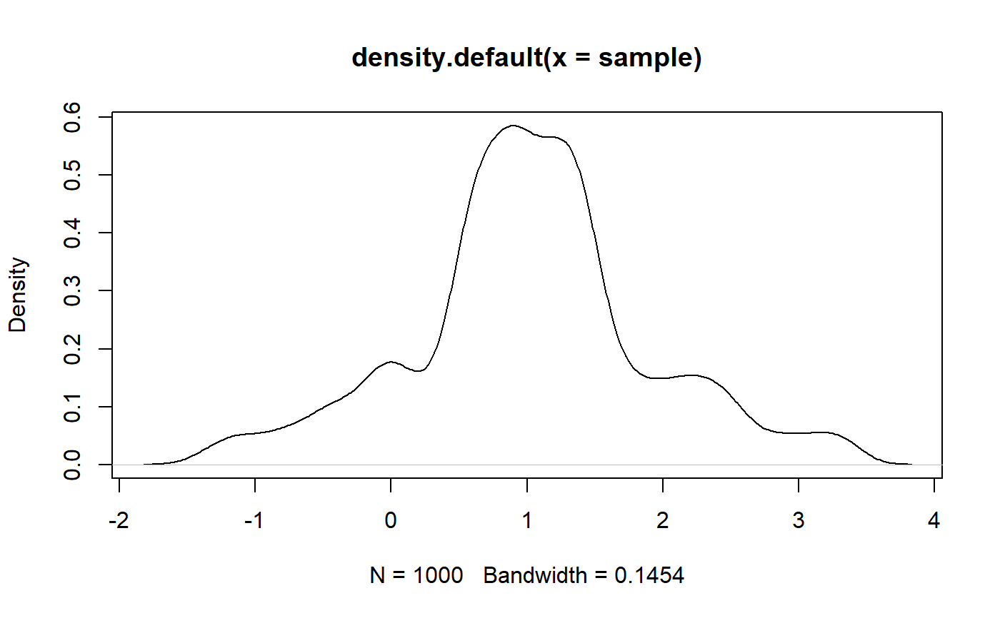

tulap.RdDistribution function and random generation for the Tulap distribution.
rtulap(n, m = 0, b = 0, q = 0) ptulap(t, m = 0, b = 0, q = 0)
| n | number of observations |
|---|---|
| m | vector of medians |
| b | vector of Discrete Laplace noise parameters, obtained by \(exp(-\epsilon)\) |
| q | vector of truncated quantiles |
| t | vector of quantiles |
ptulap gives the distribution function and rtulap
generates random derviates.
ptulap and rtulap are based on Awan, Jordan
Alexander, and Aleksandra Slavkovic. 2020. "Differentially Private
Inference for Binomial Data". Journal of Privacy and Confidentiality 10
(1). https://doi.org/10.29012/jpc.725.
#> [1] 0.8339134 0.6628285 0.2521001 1.2101627 1.3187668 1.8268291 0.4157301 #> [8] 1.1775327 0.9533265 0.5523591#> [1] 0.7834008